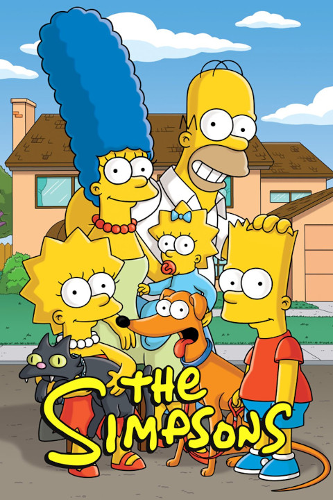

Les Simpson (The Simpsons) sont une série télévisée d'animation américaine pour adultes créée par Matt Groening et diffusée depuis le 17 décembre 1989 sur le réseau Fox.
Elle met en scène les Simpson, stéréotype d'une famille de classe moyenne américaine. Leurs aventures servent une satire du mode de vie américain. Les membres de la famille, sont Homer, Marge, Bart, Lisa, Maggie, ainsi que Abe, le père d'Homer.
